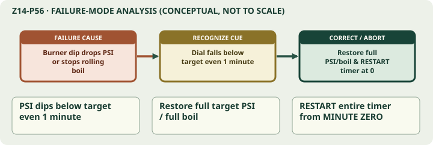

Z14-P56 · Food production and preservation · New manuscript
Restart the entire canning timer from zero if pressure or boil drops mid-cycle
Guarantee full validated thermal lethality by never "adding a few extra minutes" after a pressure or boil interruption.
When it applies · Any boiling-water or pressure-canning batch experiencing a stove-burner flameout, power blink, or pressure dip below target PSI.
Equipment · Watch/timer, stove controls, and exact tested recipe processing time.

Actions
- If pressure inside a pressure canner drops BELOW the exact target altitude-adjusted PSI at ANY moment during the processing period (even for a single minute), bring the canner cleanly back up to full target pressure and RESTART THE ENTIRE PROCESSING TIME FROM ZERO.[P33, P07, P06]
- Apply the exact same zero-restart rule to boiling-water canning if the vigorous rolling boil stops or water falls below jar tops (top up with boiling water, restore a full boil, and restart from minute zero).[P35, P08, P06]
- Do not add an arbitrary number of minutes. If pressure falls below the recipe target, restore it and restart the full time following the tested method. For process deviations or uncertainty about the batch, consult Extension before using it.[P07, P06]
Failure recognition · Watching a pressure-canner dial dip from 11 PSI to 9 PSI for four minutes during a 75-minute meat cycle and merely adding four minutes at the end.[P07]
Verify · Confirm unbroken target PSI (or rolling boil) for 100% of the timer, OR full restart from zero recorded if any dip occurred.[P07, P08]
Stop or change course · Power or gas outage halting a low-acid pressure run permanently requires cooling safely and refrigerating/freezing or fully reprocessing with new lids within 24 hours per NCHFP rules.[P07, P09]
Evidence and editorial notes
- P06 · USDA / NCHFP · USDA Complete Guide to Home Canning (2015 / current NCHFP edition)
- Section: Complete Guide to Home Canning > Principle of Tested Protocols · Conditions: All residential home canning (boiling-water and pressure canning)
Support: Treat every USDA/NCHFP tested canning recipe as a single indivisible system: food pH, piece size, liquid viscosity, jar size, headspace, processing method, pressure/temperature, time, and altitude adjustment must all match the tested protocol.
Limitations: Adding extra starch, flour, oil, fats, or altering acid/low-acid ratios slows heat penetration and can cause lethal botulism. · Conflicting evidence: Directly prohibits online untested shortcuts and heirloom recipe alterations.
Editorial note: Foundational system-integrity rule across all Z14 canning cards. · Specialist reviewer: Food preservation process authority and Extension
Primary source · checked 2026-11-24 - P07 · USDA / NCHFP · How to Use Boiling Water and Pressure Canners (Current web edition)
- Section: Using Pressure Canners; venting; operating at elevation; pressure interruption · Conditions: Validated USDA/NCHFP low-acid process, listed equipment, actual elevation
Support: Vent continuously for ten minutes before pressurizing. Select the tested product, gauge, altitude, pressure and time combination. If pressure drops below target, restore it and restart the full process time.
Limitations: No generic pressure schedule or guarantee. Confirm dial-gauge accuracy according to the reference and obtain Extension guidance on deviations. · Conflicting evidence: See A02 claim audit for boundaries.
Editorial note: Core low-acid botulism-prevention boundary in Z14. · Specialist reviewer: Food microbiology and Extension preservation specialist
Primary source · checked 2026-11-25 - P08 · NCHFP · Using Boiling Water Canners (current web edition)
- Section: Using Boiling Water Canners · Conditions: Tested high-acid or acidified recipe with a validated water-bath process
Support: Use the tested recipe’s equipment and full time including altitude adjustment. Keep required water cover and a continuous boil.
Limitations: Atmospheric steam has a separate validated scope; tomato acidification is P22. · Conflicting evidence: See A02 claim audit for boundaries.
Editorial note: Separates high-acid vs low-acid canning gates cleanly. · Specialist reviewer: Food preservation and Extension specialist
Primary source · checked 2026-11-24 - P09 · NCHFP · Using Pressure Canners (current web edition)
- Section: Headspace, Jar Preparation, Two-Piece Lids, and Cooling Seals · Conditions: Mason-type canning jars with two-piece metal lids and screw bands
Support: Use true canning jars (never commercial mayonnaise jars), leave exact recipe headspace, remove trapped air bubbles, wipe jar rims clean, tighten bands fingertip-tight only, and let jars cool undisturbed 12–24 hours before checking vacuum seals and removing rings for storage.
Limitations: Inverting jars, tightening bands after cooling, or re-using flat sealing lids causes seal failure and silent spoilage. · Conflicting evidence: None; directly targets top home-canning mechanical failures.
Editorial note: Grounds jar-seal mechanics and inspection cards in Z14. · Specialist reviewer: Food preservation specialist
Primary source · checked 2026-11-24 - P33 · NCHFP · Using Pressure Canners (current web edition)
- Section: Using Pressure Canners: dial-gauge accuracy, venting, pressure loss and canner size (Andress, 2014 revision) · Conditions: Operating dial-gauge or weighted-gauge pressure canners
Support: Check dial gauges for accuracy each year before use; replace a gauge reading more than 2 lb high or low at 5, 10 or 15 lb, and adjust when it is less than 2 lb off. Vent 10 minutes after a steady funnel of steam before pressurizing. If pressure drops during processing, return to pressure and restart the full original process time. Use a canner holding at least 4 quart jars, and raise pressure with elevation using reliable tables.
Limitations: Does not give altitude pressures; who tests gauges is not stated on the page. · Conflicting evidence: None.
Editorial note: Grounds Z14-P55 and Z14-P56 gauge and restart relationships. · Specialist reviewer: University Extension food preservation specialist
Primary source · checked 2026-11-24 - P35 · USDA / NCHFP · Complete Guide to Home Canning, Guide 1: Principles of Home Canning (revised 2015) (revised July 2015)
- Section: Guide 1 pages 1-10 (altitude), 1-18 (boiling-water restart), 1-20 to 1-24 (gauges, timing and process tables) · Conditions: Altitude, gauges and interruptions in tested canning processes
Support: Water boils at lower temperatures as altitude increases and sea-level process times may cause spoilage at 1,000 feet or more; increasing time or canner pressure compensates. Process times are given in separate tables for boiling-water, dial-gauge and weighted-gauge canners; a weighted gauge moves to the next heavier weight above 1,000 feet (for peaches 5 to 10 lb). Weighted gauges control pressure precisely and need no accuracy check. If the water stops boiling, return to a vigorous boil and restart timing from the beginning.
Limitations: Weighted-gauge steps are food-specific; read the tested table for the food. · Conflicting evidence: None.
Editorial note: Grounds Z14-P55, Z14-P56 and Z14-P57. · Specialist reviewer: University Extension food preservation specialist
Primary source · checked 2026-11-25
Source lineage · NCHFP Using Pressure and Boiling Water Canners; new manuscript · Classification · New manuscript.